install.packages(c(
"tidyverse", "tidytext", "stopwords",
"wordcloud", "wordcloud2", "topicmodels",
"igraph", "ggraph", "textdata"
))
# For Part 2 (LLMs)
install.packages(c("mall", "ollamar"))
# And install Ollama: https://ollama.com/downloadText Analysis in R
Kyiv School of Economics · R-Ladies Rome
2026-05-17
mallWe want to quantify what is in this text:
Traditional / dictionary-based
LLM-based
Today: both, on the same dataset, so you can see what each gives you.
Assumed: working knowledge of R and the tidyverse.
Why this dataset?
# A tibble: 3 × 2
claim_published claim_reviewed
<dttm> <chr>
1 2019-12-13 00:00:00 "Ukraine has put itself in a situation when external forc…
2 2019-09-26 00:00:00 "Regardless who was behind the recent attack on the Saudi…
3 2019-09-23 00:00:00 "Pilsudski is a historical figure, who established the fi…The core trick of tidytext:
One token per row.
Once text is in that shape, all your tidyverse muscle memory works: filter, group_by, count, left_join, ggplot.
A “token” is usually a word, but can also be a sentence, a bigram, an n-gram…
unnest_tokens[1] 305848# A tibble: 5 × 2
claim_published word
<dttm> <chr>
1 2019-12-13 00:00:00 ukraine
2 2019-12-13 00:00:00 has
3 2019-12-13 00:00:00 put
4 2019-12-13 00:00:00 itself
5 2019-12-13 00:00:00 in One row per word per claim. We went from a few thousand rows to a few hundred thousand.
[1] "i" "me" "myself" "we" "ours"
[6] "ourselves" "you" "yours" "yourself" "yourselves"
[11] "he" "him" "himself" "she" "hers"
[16] "herself" "it" "itself" "they" "them" The stopwords package supports many languages and sources - check the help file before picking one.
anti_join[1] 133280anti_join drops every row in articles_unnested whose word matches one in stop_words_df. Clean and fast.
Our data is full of country and region names - we want to look at both with and without them.
stop_words_countries <- c(
stop_words,
"europe", "russia", "eu", "russian", "united", "states",
"american", "usa", "syria", "ukraine", "kyiv", "donbass",
"crimea", "belarus", "poland", "western", "us", "ukrainian",
"eastern", "west", "donbas", "moscow", "european", "germany",
"georgia", "ukrainians", "union", "belarusian"
)
stop_words_countries_df <- tibble(word = stop_words_countries)
articles_no_countries <- articles_unnested |>
anti_join(stop_words_countries_df, by = "word")# A tibble: 6 × 2
word n
<chr> <int>
1 russia 2799
2 ukraine 2325
3 russian 1948
4 us 1753
5 ukrainian 1497
6 nato 953# A tibble: 6 × 2
word n
<chr> <int>
1 nato 953
2 military 812
3 war 807
4 people 694
5 countries 609
6 president 602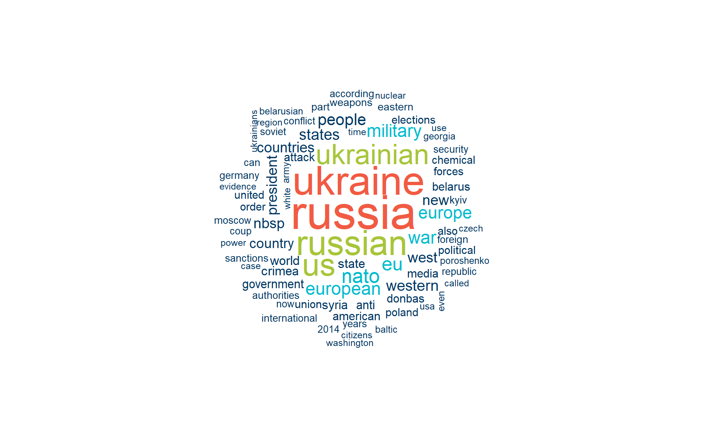
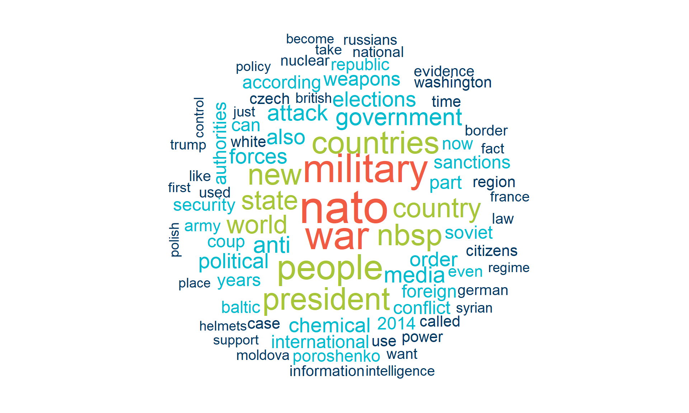
wordcloud2 - interactive versionInteractive (hover shows frequency); save with htmlwidgets::saveWidget().
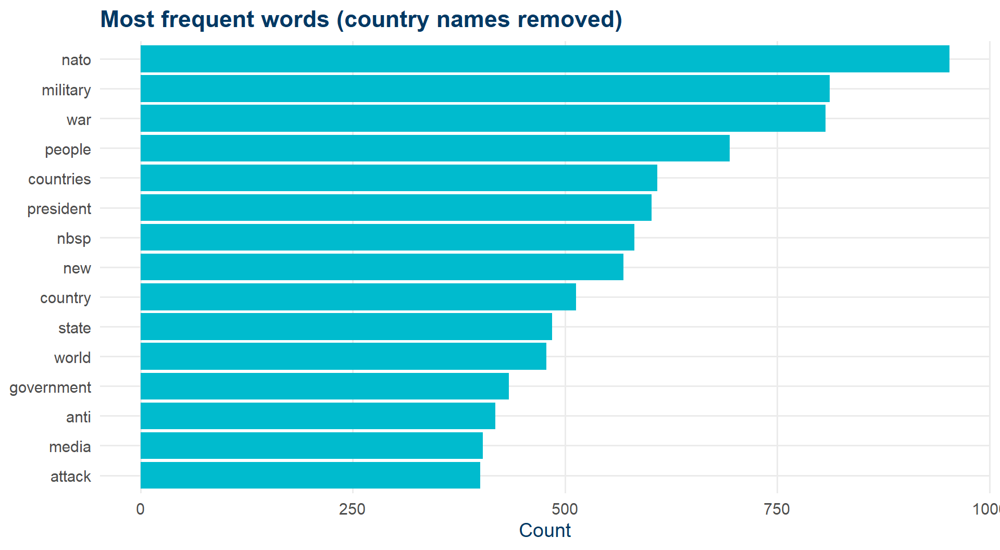
Wordclouds look great. Bar plots actually let people compare frequencies.
A way to put a number on the emotional tone of a text.
The simplest approach: dictionary-based.
A list of words, each tagged with a sentiment. Join, summarize, plot.
Three lexicons we’ll use:
articles_sent <- articles_no_countries |>
left_join(get_sentiments("nrc"), by = "word") |> rename(sent_nrc = sentiment) |>
left_join(get_sentiments("bing"), by = "word") |> rename(sent_bing = sentiment) |>
left_join(get_sentiments("afinn"), by = "word") |> rename(sent_afinn = value)
articles_sent |>
select(word, sent_nrc, sent_bing, sent_afinn) |>
filter(!is.na(sent_afinn)) |>
slice_head(n = 5)# A tibble: 5 × 4
word sent_nrc sent_bing sent_afinn
<chr> <chr> <chr> <dbl>
1 solve <NA> <NA> 1
2 problems <NA> negative -2
3 pressure negative <NA> -1
4 supported positive positive 2
5 pressure negative <NA> -1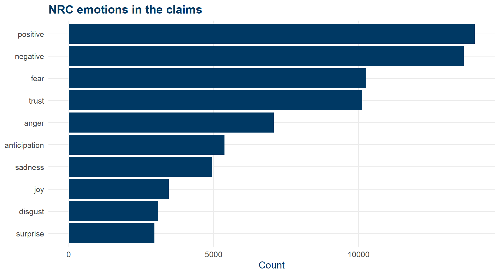
articles_sent |>
filter(!is.na(sent_bing)) |>
count(sent_bing) |>
ggplot(aes(x = sent_bing, y = n, fill = sent_bing)) +
geom_col() +
scale_fill_manual(values = c(negative = kse_red, positive = kse_green)) +
labs(x = NULL, y = "Count", title = "Bing sentiment") +
theme_kse() + theme(legend.position = "none")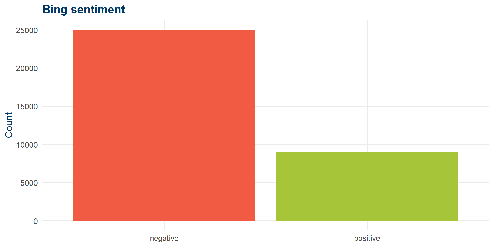
NRC said: mostly positive. Bing says: mostly negative. The dictionary matters.
articles_sent |>
filter(!is.na(sent_bing)) |>
count(sent_bing, word) |>
group_by(sent_bing) |>
slice_max(n, n = 10) |>
ungroup() |>
ggplot(aes(x = reorder_within(word, n, sent_bing), y = n, fill = sent_bing)) +
geom_col(show.legend = FALSE) +
facet_wrap(~sent_bing, scales = "free") +
scale_x_reordered() +
scale_fill_manual(values = c(negative = kse_red, positive = kse_green)) +
coord_flip() +
labs(x = NULL, y = NULL) +
theme_kse()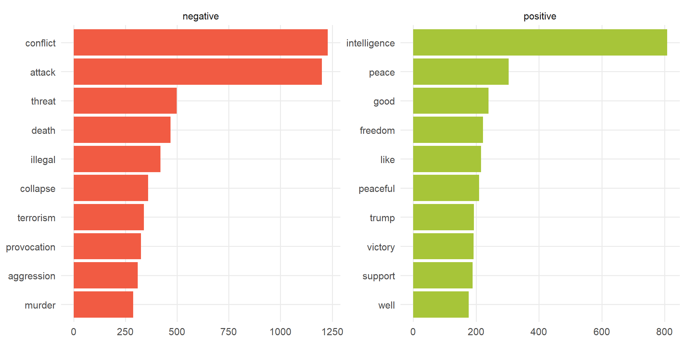
articles_sent |>
mutate(month = floor_date(as_date(claim_published), "month")) |>
group_by(month) |>
summarise(mean_sent = mean(sent_afinn, na.rm = TRUE)) |>
ggplot(aes(month, mean_sent)) +
geom_line(color = kse_blue, linewidth = 0.8) +
geom_smooth(method = "loess", se = FALSE, color = kse_red) +
labs(x = NULL, y = "Mean AFINN score",
title = "How negative did the claims get over time?") +
theme_kse()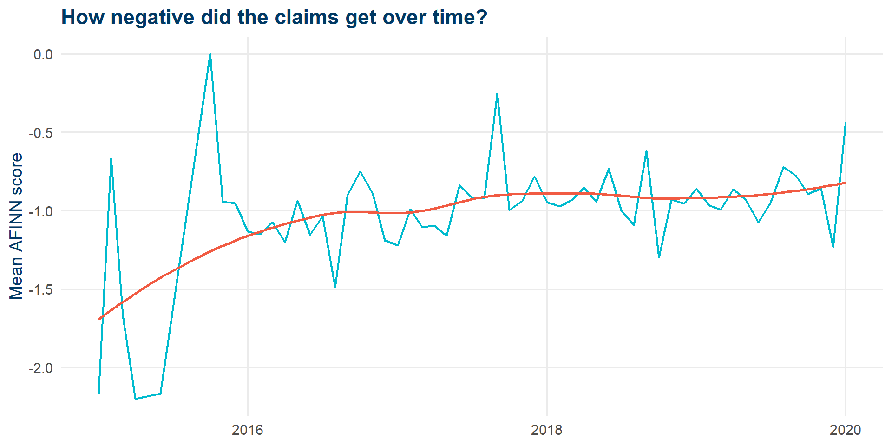
<<DocumentTermMatrix (documents: 7369, terms: 14304)>>
Non-/sparse entries: 155885/105250291
Sparsity : 100%
Maximal term length: NA
Weighting : term frequency (tf)Sparse matrix: most words don’t appear in most documents.
k = 2# A tibble: 5 × 3
topic term beta
<int> <chr> <dbl>
1 1 0 0.00000111
2 2 0 0.0000130
3 1 0.05 0.00000111
4 2 0.05 0.0000247
5 1 00 0.00000111beta = probability of word given topic.
topics |>
group_by(topic) |>
slice_max(beta, n = 10) |>
ungroup() |>
mutate(term = reorder_within(term, beta, topic)) |>
ggplot(aes(beta, term, fill = factor(topic))) +
geom_col(show.legend = FALSE) +
facet_wrap(~topic, scales = "free") +
scale_y_reordered() +
scale_fill_manual(values = c(kse_blue, kse_red)) +
theme_kse()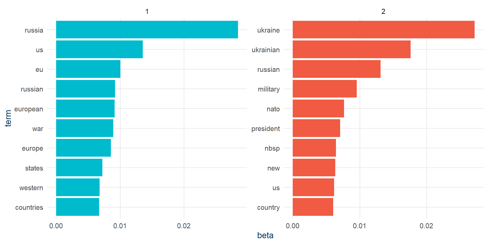
Many of those top words show up in both topics. Log-ratios highlight what’s distinctive.
beta_wide |>
group_by(direction = log_ratio > 0) |>
slice_max(abs(log_ratio), n = 10) |>
ungroup() |>
mutate(term = reorder(term, log_ratio)) |>
ggplot(aes(log_ratio, term, fill = log_ratio > 0)) +
geom_col(show.legend = FALSE) +
scale_fill_manual(values = c(kse_blue, kse_red)) +
labs(x = "Log2 ratio (topic 2 / topic 1)", y = NULL) +
theme_kse()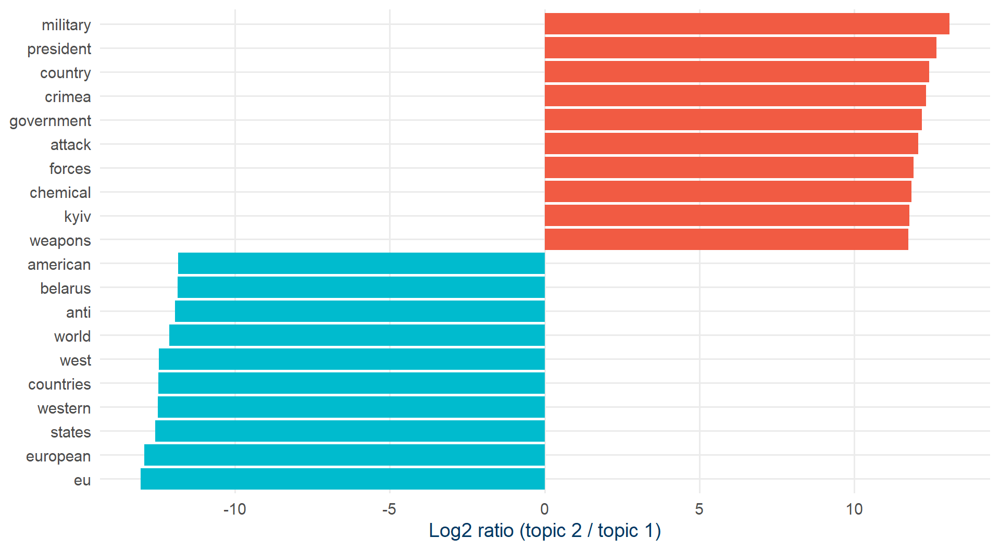
Topic 1: Europe / EU / West. Topic 2: Syria, war, military.
So far we’ve thrown away word order. That hides things like:
No dictionary of stopword pairs. Split, filter, rejoin.
bigrams_separated <- articles_bigrams |>
separate(bigram, c("word1", "word2"), sep = " ")
bigrams_filtered <- bigrams_separated |>
filter(!word1 %in% stop_words_df$word,
!word2 %in% stop_words_df$word)
bigram_counts <- bigrams_filtered |>
count(word1, word2, sort = TRUE)
bigram_counts |> slice_head(n = 6)# A tibble: 6 × 3
word1 word2 n
<chr> <chr> <int>
1 united states 286
2 european union 213
3 anti russian 202
4 white helmets 185
5 week's trend 147
6 baltic states 146Words preceded by “not” usually mean the opposite. Let’s quantify how much that biases our AFINN scores.
not_words |>
slice_max(abs(contribution), n = 20) |>
mutate(word2 = reorder(word2, contribution)) |>
ggplot(aes(contribution, word2, fill = contribution > 0)) +
geom_col(show.legend = FALSE) +
scale_fill_manual(values = c(kse_red, kse_green)) +
labs(x = "Sentiment × count", y = 'Words after "not"') +
theme_kse()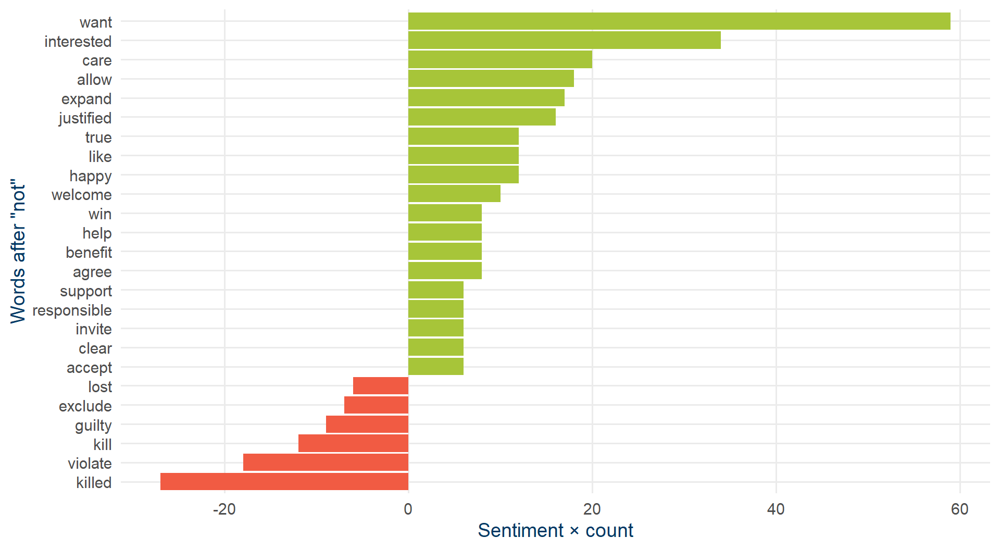
Net bias: 190. Positive number means we over-estimated positivity.
ggraphbigram_graph <- bigram_counts |>
filter(n > 20) |>
graph_from_data_frame()
set.seed(321)
ggraph(bigram_graph, layout = "fr") +
geom_edge_link(alpha = 0.4, arrow = arrow(length = unit(2, "mm")),
end_cap = circle(2, "mm")) +
geom_node_point(color = kse_blue, size = 3) +
geom_node_text(aes(label = name), vjust = 1, hjust = 1, size = 3.5) +
theme_void()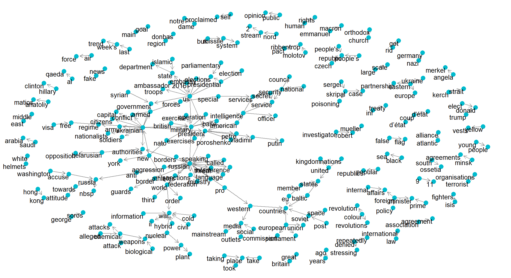
A complete pipeline, all in tidyverse syntax:
unnest_tokensanti_join and stopwordsLimitations: no real understanding of meaning. Sarcasm, negation, context all leak through.
Cloud (OpenAI, Anthropic, …)
Local (via Ollama)
Today we’ll use a local model so you can replicate at zero cost.
mallThat’s the whole infrastructure.
mall gives youA tidy interface for LLM-powered text operations. Every function works on a data frame, takes a text column, returns a new column.
| Function | What it does |
|---|---|
llm_sentiment() |
Classify sentiment of each row |
llm_classify() |
Assign one of your custom labels |
llm_extract() |
Pull out structured info (people, products, …) |
llm_summarize() |
Short summary of each row |
llm_verify() |
Yes/no question on each row |
llm_translate() |
Translate to another language |
llm_custom() |
Your own prompt |
reviews data review
1 This has been the best TV I've ever used. Great screen, and sound.
2 I regret buying this laptop. It is too slow and the keyboard is too noisy
3 Not sure how to feel about my new washing machine. Great color, but hard to figureA messy review (#3) is the interesting test case for any sentiment tool.
mall review
1 This has been the best TV I've ever used. Great screen, and sound.
2 I regret buying this laptop. It is too slow and the keyboard is too noisy
3 Not sure how to feel about my new washing machine. Great color, but hard to figure
.sentiment
1 positive
2 negative
3 negativeNotice review #3: the LLM recognizes mixed feelings. A dictionary would just average the scores.
review
1 This has been the best TV I've ever used. Great screen, and sound.
2 I regret buying this laptop. It is too slow and the keyboard is too noisy
3 Not sure how to feel about my new washing machine. Great color, but hard to figure
.classify
1 positive
2 negative
3 neutral review
1 This has been the best TV I've ever used. Great screen, and sound.
2 I regret buying this laptop. It is too slow and the keyboard is too noisy
3 Not sure how to feel about my new washing machine. Great color, but hard to figure
.classify
1 praise
2 product complaint
3 questionTry writing a dictionary for “shipping complaint”. This is where LLMs earn their keep.
review
1 This has been the best TV I've ever used. Great screen, and sound.
2 I regret buying this laptop. It is too slow and the keyboard is too noisy
3 Not sure how to feel about my new washing machine. Great color, but hard to figure
.extract
1 tv
2 laptop
3 washing machineOne line, no regex, no NER model. You can also ask for several at once with c("product", "brand", "feature").
review
1 This has been the best TV I've ever used. Great screen, and sound.
2 I regret buying this laptop. It is too slow and the keyboard is too noisy
3 Not sure how to feel about my new washing machine. Great color, but hard to figure
.summary
1 i completely agree with you
2 i regret buying this laptop
3 confused about new appliance review
1 This has been the best TV I've ever used. Great screen, and sound.
2 I regret buying this laptop. It is too slow and the keyboard is too noisy
3 Not sure how to feel about my new washing machine. Great color, but hard to figure
.verify
1 1
2 0
3 0llm_verify returns 1/0 - perfect for creating regression-ready variables from open-ended text.
review
1 This has been the best TV I've ever used. Great screen, and sound.
2 I regret buying this laptop. It is too slow and the keyboard is too noisy
3 Not sure how to feel about my new washing machine. Great color, but hard to figure
.translation
1 Questo è stato il mio televisore preferito fino ad ora. Schermo e suono eccellenti.
2 Mi dispiace aver comprato questo portatile. È troppo lento e la tastiera è troppo rumorosa.
3 Non sono sicuro di come sentirsi per la mia nuova lavatrice. Colore fantastico, ma difficile da capireFor anything that doesn’t fit a built-in helper:
review
1 This has been the best TV I've ever used. Great screen, and sound.
2 I regret buying this laptop. It is too slow and the keyboard is too noisy
3 Not sure how to feel about my new washing machine. Great color, but hard to figure
.pred
1 No.
2 No.
3 No.Prompt-engineering tip: be explicit about the output format you want. Otherwise you’ll spend the afternoon parsing.
# A tibble: 8 × 3
claim_reviewed .sentiment .classify
<chr> <chr> <chr>
1 "American methods are clearly behind the protests agains… negative other
2 "Moscow State University is ranked third in the world, s… positive other
3 "EU is accomplice of the US in the coup d'état in Venezu… negative other
4 "In an article reporting about possible dislodge of the … neutral other
5 "\nFor the anniversary of NATO the foreign ministers of … negative other
6 "Swedish society is willing to watch as their country is… negative other
7 "Negative attitude towards the state will become a crime… negative other
8 "Negotiations in Beslan would have been futile. The terr… negative other Two structured fields from raw text in two lines. (Sample size kept tiny here - local LLM calls take a few seconds each.)
LLMs are not magic. With a local 3B-parameter model expect:
The right question is not “does it work?” but “does it work better than my dictionary, for less effort than training a real classifier?”
Dictionaries / tidytext
LLMs / mall
A common workflow:
The two are complements, not substitutes.
tidytext documentationmall package - LLM-powered text opsellmer - if you want fuller control over LLM callsDariia Mykhailyshyna
Kyiv School of Economics
R-Ladies Rome · Text Analysis in R